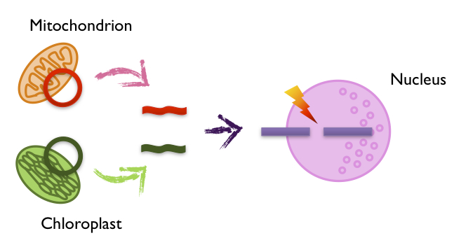

It is known that most eukaryotic nuclear genomes contain regions derived
from organelle DNA insertions, so-called NUMTs and NUPTs
(NUclear MiTochondrial and PlasTidal sequences).

What's norg-suite?
norg-suite
is a software package which accurately delineates
organelle DNA insertions in nuclear genomes.
To prepare the above tools easily,
norg-suite provides a shell script
which automatically downloads the latest versions of the above tools.
Under "tools" directory, you can use the script like this:
$ chmod +x fetch.sh
$ fetch.sh -a
After fetching the tools, please follow each software instruction to compile.